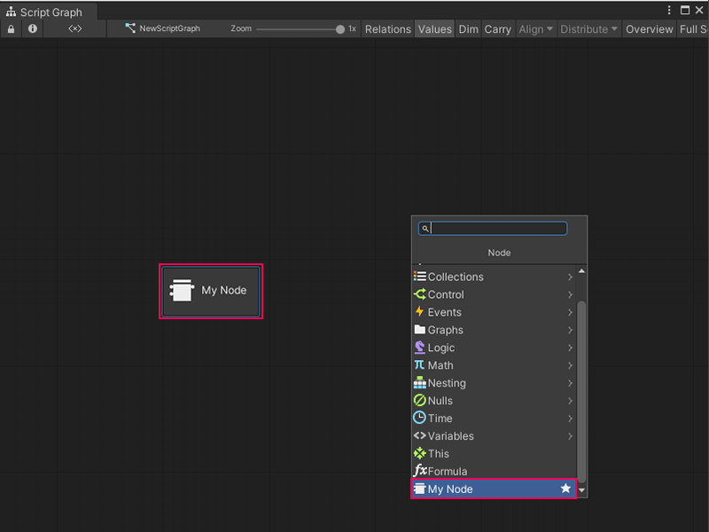

Create a new simple Custom C# node¶
You can create a Custom C# node to run your own custom logic in a Script Graph. For more information on Custom C# nodes, see Custom C# nodes.
To create a new simple Custom C# node:
[!includeopen-project-window]
Right-click a folder in the Project window’s folder list, or anywhere in the Project window’s preview pane, and go to Create > C# Script.
Enter a name, such as
MyNode, for the new script file.Press Enter.
[!includeopen-new-external-code]
In your external editor, copy and paste the following code into your C# script:
using Unity.VisualScripting; using UnityEngine; public class MyNode : Unit { protected override void Definition() //The method to set what our node will be doing. { } }
[!includesave-script]
[!includereturn-unity]
[!includeregen-node-library]
[!NOTE] If you don’t regenerate your Node Library, the node won’t appear in Visual Scripting’s fuzzy finder.
Open a Script Graph where you want to add your new node.
[!includeopen-fuzzy-finder]
The node appears as
My Nodeat the end of the fuzzy finder list. Select the node to add it to your graph.
Next steps¶
After you create the basic start to a node and add it to Visual Scripting’s fuzzy finder, add ports so your node can send and receive data.